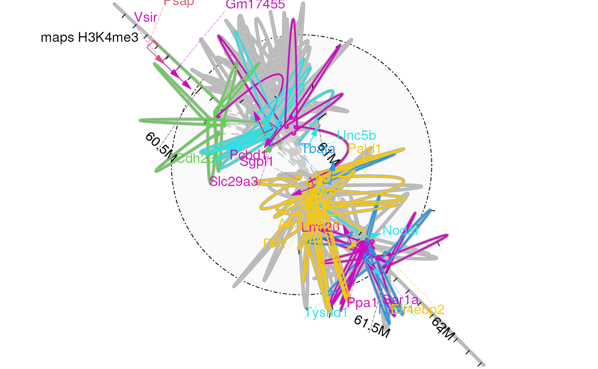
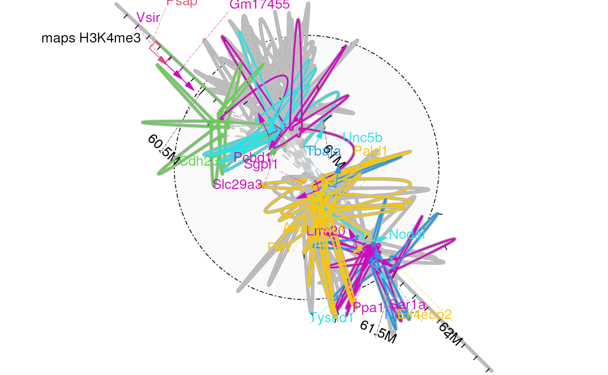
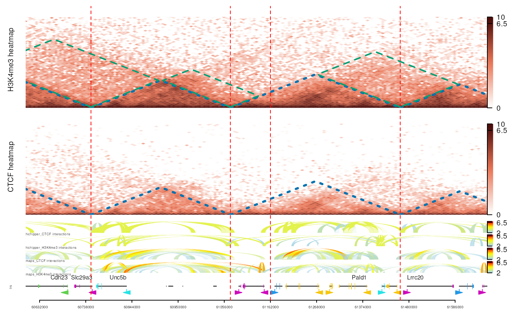

Introduction
To demonstrate the utility of loopBouquetPlot in
comparing different loop callers for the same dataset, we will visualize
the loops called by MAPS1 and hichipper2 side by side.
library(InteractionSet)
library(trackViewer)
library(ChIPpeakAnno)
library(TxDb.Mmusculus.UCSC.mm10.knownGene)
library(org.Mm.eg.db)
library(rtracklayer)DATA from MAPS paper
Download data from MAPS paper.
url <- 'https://doi.org/10.1371/journal.pcbi.1006982.s027'
tmpf <- tempfile()
download.file(url=url, destfile = tmpf)
tmpdir <- tempdir()
unzip(tmpf, exdir = tmpdir)
d <- file.path(tmpdir, 'Supplementary data')
MAPS_files <- dir(d, 'MAPS')
(names(MAPS_files) <- sub('_combine_MAPS_call', '',
sub('.bedpe', '', MAPS_files)))
hichipper_files <- dir(d, 'hichipper')
(names(hichipper_files) <- sub('_combine_hichipper_converted.bedpe',
'', hichipper_files))
maps_loops <- lapply(MAPS_files, function(.ele){
.ele <- read.delim(file.path(d, .ele))
with(.ele, GInteractions(GRanges(chr1, IRanges(start1+1, end1)),
GRanges(chr2, IRanges(start2+1, end2)),
score = -log10(fdr)))
})
hichipper_loops <- lapply(hichipper_files, function(.ele){
.ele <- read.delim(file.path(d, .ele))
with(.ele, GInteractions(GRanges(chr1, IRanges(start1+1, end1)),
GRanges(chr2, IRanges(start2+1, end2)),
score = -log10(fdr)))
})
mm_gi <- list(
maps_CTCF = maps_loops[["mESC_CTCF"]],
hichipper_CTCF = hichipper_loops[["mESC_CTCF"]],
maps_H3K4me3 = maps_loops[["mESC_H3K4me3"]],
hichipper_H3K4me3 = hichipper_loops[["mESC_H3K4me3"]]
)We have already downloaded the data and saved a subset of it within this package. Now, we will load the data from this package to save time.
## set the data folder, all data are available in the extdata folder of this package
extdata <- system.file('extdata',
'GSE119663',
package='loopBouquetPlotDocumentation')
## list all interaction BEDPE files
interactions <- dir(extdata,
"bedpe",
full.names = TRUE)
names(interactions) <- sub('.bedpe.gz',
'',
basename(interactions))
mm_gi <- lapply(interactions, import)
mm_gi <- lapply(mm_gi, function(.ele){
GInteractions(first(.ele), second(.ele), score=mcols(.ele)$score)
})
## hic files were downloaded from processed data of GSE119663
mm_hic <- dir(extdata, 'PLACseq.rds', full.names = TRUE)
(names(mm_hic) <- sub("_PLACseq.rds", " heatmap", basename(mm_hic)))## [1] "CTCF heatmap" "H3K4me3 heatmap"Here is the helper function to prepare the annotation data.
prepareFeatures <- function(gi, range, species){
reg <- lapply(gi, InteractionSet::regions)
reg <- unlist(GRangesList(reg))
reg <- reg[seqnames(reg) %in% seqnames(range)[1]]
feature.gr <- subsetByOverlaps(get(paste0(species, "_feature")), range(reg))
## extract The gene symbols
symbols <- ChIPpeakAnno::xget(
feature.gr$gene_id,
org.Mm.egSYMBOL,
output='first')
feature.gr$symbols <- symbols
geneType <- ChIPpeakAnno::xget(
feature.gr$gene_id,
org.Mm.egGENETYPE,
output='all'
)
keep <- !is.na(symbols) & symbols!='NA' & grepl('protein-coding', geneType)
feature.gr$label <- NA
feature.gr$label[keep] <- symbols[keep]
## assign colors for the genes
feature.gr$col[keep] <- sample(2:7, length(feature.gr[keep]), replace=TRUE)
## set the annotation type to 'gene'
feature.gr$type <- 'gene'
feature.gr
}Plot data by loopBouquetPlot for a given region
mm_range <- GRanges('chr10', IRanges(60600001, 61660000))
mm_feature <- genes(TxDb.Mmusculus.UCSC.mm10.knownGene)## 66 genes were dropped because they have exons located on both strands
## of the same reference sequence or on more than one reference sequence,
## so cannot be represented by a single genomic range.
## Use 'single.strand.genes.only=FALSE' to get all the genes in a
## GRangesList object, or use suppressMessages() to suppress this message.
mm_feature.gr <- prepareFeatures(mm_gi, mm_range, species='mm')
op <- par(mfrow=c(2, 2))
for(caller in c('maps', 'hichipper')){ ## loop for caller
for(antibody in c('CTCF', 'H3K4me3')){ ## loop for antibody type
gi.s <- subsetByOverlaps(mm_gi[[paste0(caller, '_', antibody)]], mm_range) ## get the interaction data
if(length(gi.s)>1){
## plot data
set.seed(123)
loopBouquetPlot(gi = gi.s,
range = mm_range,
feature.gr = mm_feature.gr,
coor_tick_unit = 5e4,
coor_mark_interval = 5e5,
lwd.gene = 2,
method = 1)
## mark the sub-figure
grid::grid.text(label=paste(caller, antibody), x=.15, y=.9)
}
}
}
par(op) 

gis <- lapply(mm_hic, function(.ele){
## data were prepared by importGInteractions with KR normalization
## score are log2 transformed observed data
# .ele <- importGInteractions(.ele, ranges = range.ext,
# format = "hic",
# resolution = 10000,
# out = "track",
# normalization = "KR",
# matrixType = "observed")
# .ele$dat$score <- log2(.ele$dat$score)
readRDS(.ele)
})
id <- mm_feature.gr$gene_id
symbol <- mm_feature.gr$symbols
trs <- geneTrack(id, TxDb.Mmusculus.UCSC.mm10.knownGene,
symbol, asList = FALSE)
trs$dat$color[!is.na(trs$dat$id)] <-
mm_feature.gr[trs$dat$id[!is.na(trs$dat$id)]]$col
## loops
loops <- lapply(mm_gi, gi2track)
loops <- lapply(loops, function(.ele){
.ele$dat$score <- log2(.ele$dat$score)
setTrackStyleParam(.ele, "tracktype", "link")
.ele
})
names(loops) <- paste(names(loops), 'interactions')
op <- optimizeStyle(
trackList = trackList(trs,
rev(loops),
gis,
## set the height for each track
heightDist = c(2,
length(loops),
length(gis)*8)))
tL <- op$tracks
sty <- op$style
## set color keys for the link tracks
for(i in which(grepl('interactions', names(tL)))){
setTrackStyleParam(tL[[i]], "breaks",
## set the breaks from min to max
c(seq(from=2, to=6.5, by=.5), 10))
setTrackStyleParam(tL[[i]], "color",
c("lightblue", "yellow", "red"))
setTrackYaxisParam(tL[[i]], "draw", TRUE)
setTrackStyleParam(tL[[i]], 'ylabpos', 'bottomleft')
}
## set color keys for the heatmaps
for(i in which(grepl('heatmap', names(tL)))){
setTrackStyleParam(tL[[i]], "breaks",
c(seq(from=0, to=6.5, by=.5), 10))
setTrackStyleParam(tL[[i]], "color",
c("#FDF8F5", "#EA7556", "#4D0E0B"))
}
vp <- trackViewer::viewTracks(tL, viewerStyle = sty,
gr=mm_range, autoOptimizeStyle = FALSE)
addGuideLine(c(60750000, 61070000, 61162000, 61460000), col='red', vp=vp)
tads <- GRanges('chr10', IRanges(c(60260001, 60750001, 61070001, 61460001),
c(60750000, 61070000, 61460000, 61735000)))
for(i in which(grepl('heatmap', names(tL)))){
addInteractionAnnotation(tads, names(tL)[i],
grid.lines, gp=gpar(col="#0072B2", lwd=3, lty=3))
}
## highlight the differential interaction region among the H3K4me3 and CTCF PLAC-Seq
gi_sub <- GInteractions(
GRanges('chr10', IRanges(c(60260001, 60750001, 61070001),
c(60750000, 61070000, 61460000))),
GRanges('chr10', IRanges(c(60750001, 61070001, 61460001),
c(61070000, 61210000, 61735000)))
)
## make sure not olverlap with TAD curve
start(regions(gi_sub)) <- start(regions(gi_sub))+5000
end(regions(gi_sub)) <- end(regions(gi_sub))-5000
addInteractionAnnotation(gi_sub, "H3K4me3 heatmap",
grid.polygon,
gp=gpar(col="#009E73", lwd=2, lty=2, fill=NA))
sessionInfo
## R Under development (unstable) (2024-03-28 r86224)
## Platform: x86_64-pc-linux-gnu
## Running under: Ubuntu 22.04.4 LTS
##
## Matrix products: default
## BLAS: /usr/lib/x86_64-linux-gnu/openblas-pthread/libblas.so.3
## LAPACK: /usr/lib/x86_64-linux-gnu/openblas-pthread/libopenblasp-r0.3.20.so; LAPACK version 3.10.0
##
## locale:
## [1] LC_CTYPE=en_US.UTF-8 LC_NUMERIC=C
## [3] LC_TIME=en_US.UTF-8 LC_COLLATE=en_US.UTF-8
## [5] LC_MONETARY=en_US.UTF-8 LC_MESSAGES=en_US.UTF-8
## [7] LC_PAPER=en_US.UTF-8 LC_NAME=C
## [9] LC_ADDRESS=C LC_TELEPHONE=C
## [11] LC_MEASUREMENT=en_US.UTF-8 LC_IDENTIFICATION=C
##
## time zone: Etc/UTC
## tzcode source: system (glibc)
##
## attached base packages:
## [1] grid stats4 stats graphics grDevices utils datasets
## [8] methods base
##
## other attached packages:
## [1] rtracklayer_1.63.2
## [2] org.Mm.eg.db_3.19.0
## [3] TxDb.Mmusculus.UCSC.mm10.knownGene_3.10.0
## [4] GenomicFeatures_1.55.4
## [5] AnnotationDbi_1.65.2
## [6] ChIPpeakAnno_3.37.4
## [7] trackViewer_1.39.17
## [8] InteractionSet_1.31.0
## [9] SummarizedExperiment_1.33.3
## [10] Biobase_2.63.1
## [11] MatrixGenerics_1.15.0
## [12] matrixStats_1.2.0
## [13] GenomicRanges_1.55.4
## [14] GenomeInfoDb_1.39.10
## [15] IRanges_2.37.1
## [16] S4Vectors_0.41.5
## [17] BiocGenerics_0.49.1
##
## loaded via a namespace (and not attached):
## [1] splines_4.5.0 BiocIO_1.13.0 bitops_1.0-7
## [4] filelock_1.0.3 tibble_3.2.1 graph_1.81.0
## [7] XML_3.99-0.16.1 rpart_4.1.23 lifecycle_1.0.4
## [10] httr2_1.0.1 lattice_0.22-6 ensembldb_2.27.1
## [13] MASS_7.3-60.2 backports_1.4.1 magrittr_2.0.3
## [16] Hmisc_5.1-2 sass_0.4.9 rmarkdown_2.26
## [19] jquerylib_0.1.4 yaml_2.3.8 plotrix_3.8-4
## [22] Gviz_1.47.1 DBI_1.2.2 RColorBrewer_1.1-3
## [25] abind_1.4-5 zlibbioc_1.49.3 purrr_1.0.2
## [28] AnnotationFilter_1.27.0 biovizBase_1.51.0 RCurl_1.98-1.14
## [31] nnet_7.3-19 VariantAnnotation_1.49.7 rappdirs_0.3.3
## [34] GenomeInfoDbData_1.2.12 grImport_0.9-7 pkgdown_2.0.7
## [37] codetools_0.2-20 DelayedArray_0.29.9 xml2_1.3.6
## [40] tidyselect_1.2.1 futile.logger_1.4.3 universalmotif_1.21.4
## [43] BiocFileCache_2.11.2 base64enc_0.1-3 GenomicAlignments_1.39.5
## [46] jsonlite_1.8.8 multtest_2.59.0 Formula_1.2-5
## [49] survival_3.5-8 systemfonts_1.0.6 tools_4.5.0
## [52] progress_1.2.3 ragg_1.3.0 strawr_0.0.91
## [55] Rcpp_1.0.12 glue_1.7.0 gridExtra_2.3
## [58] SparseArray_1.3.4 xfun_0.43 dplyr_1.1.4
## [61] formatR_1.14 fastmap_1.1.1 latticeExtra_0.6-30
## [64] rhdf5filters_1.15.4 fansi_1.0.6 digest_0.6.35
## [67] R6_2.5.1 textshaping_0.3.7 colorspace_2.1-0
## [70] jpeg_0.1-10 dichromat_2.0-0.1 biomaRt_2.59.1
## [73] RSQLite_2.3.6 utf8_1.2.4 tidyr_1.3.1
## [76] generics_0.1.3 data.table_1.15.4 prettyunits_1.2.0
## [79] httr_1.4.7 htmlwidgets_1.6.4 S4Arrays_1.3.6
## [82] regioneR_1.35.0 pkgconfig_2.0.3 gtable_0.3.4
## [85] blob_1.2.4 XVector_0.43.1 htmltools_0.5.8
## [88] RBGL_1.79.0 ProtGenerics_1.35.4 scales_1.3.0
## [91] png_0.1-8 knitr_1.45 lambda.r_1.2.4
## [94] rstudioapi_0.16.0 rjson_0.2.21 checkmate_2.3.1
## [97] curl_5.2.1 cachem_1.0.8 rhdf5_2.47.6
## [100] stringr_1.5.1 parallel_4.5.0 foreign_0.8-86
## [103] restfulr_0.0.15 desc_1.4.3 pillar_1.9.0
## [106] vctrs_0.6.5 dbplyr_2.5.0 cluster_2.1.6
## [109] htmlTable_2.4.2 evaluate_0.23 VennDiagram_1.7.3
## [112] cli_3.6.2 compiler_4.5.0 futile.options_1.0.1
## [115] Rsamtools_2.19.4 rlang_1.1.3 crayon_1.5.2
## [118] interp_1.1-6 fs_1.6.3 stringi_1.8.3
## [121] deldir_2.0-4 BiocParallel_1.37.1 txdbmaker_0.99.8
## [124] munsell_0.5.1 Biostrings_2.71.5 lazyeval_0.2.2
## [127] Matrix_1.7-0 BSgenome_1.71.4 hms_1.1.3
## [130] bit64_4.0.5 ggplot2_3.5.0 Rhdf5lib_1.25.1
## [133] KEGGREST_1.43.0 highr_0.10 igraph_2.0.3
## [136] memoise_2.0.1 bslib_0.7.0 bit_4.0.51.
Juric, I. et al. MAPS: Model-based
analysis of long-range chromatin interactions from PLAC-seq and HiChIP
experiments. PLoS computational biology 15,
e1006982 (2019).
2.
Lareau, C. A. & Aryee, M. J. Hichipper: A
preprocessing pipeline for calling DNA loops from HiChIP data.
Nature methods 15, 155–156 (2018).